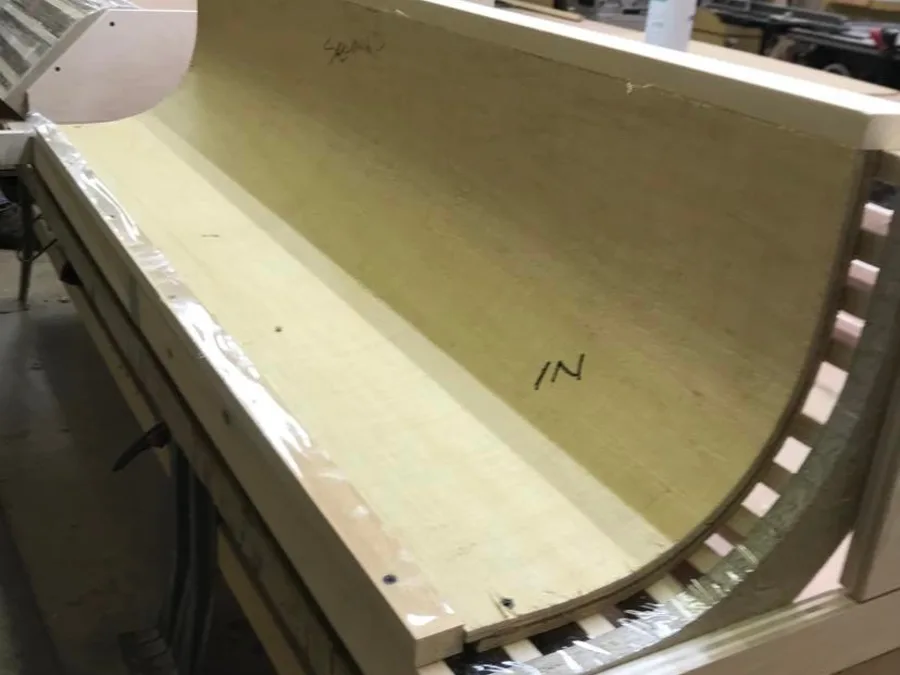
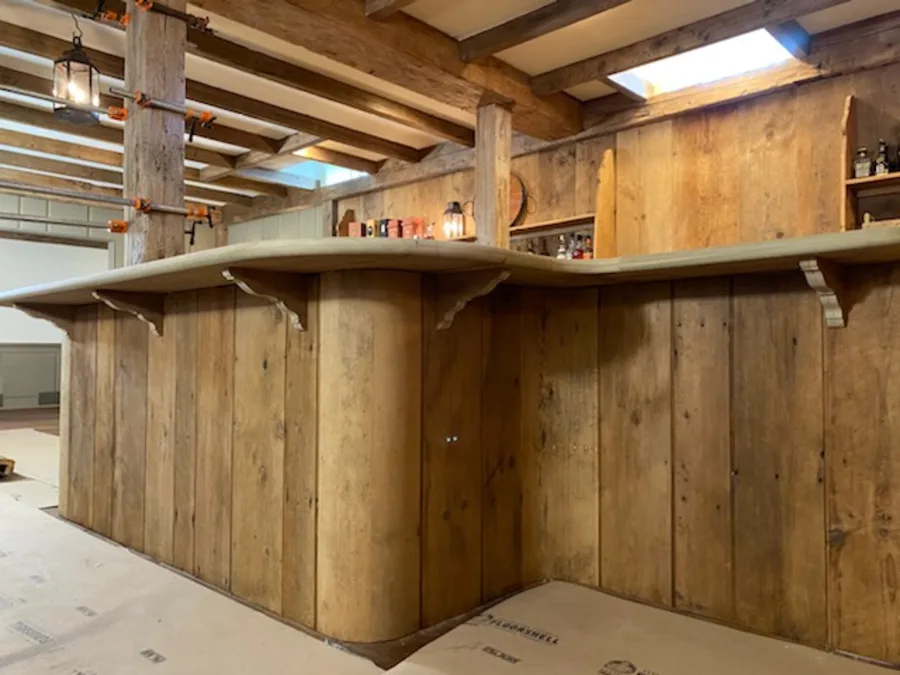
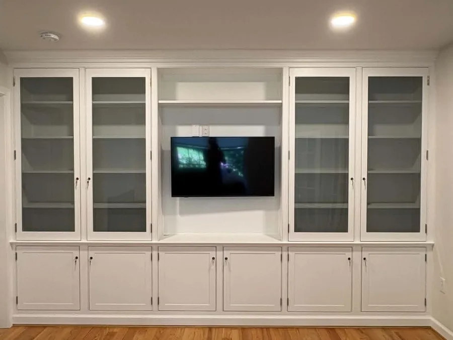
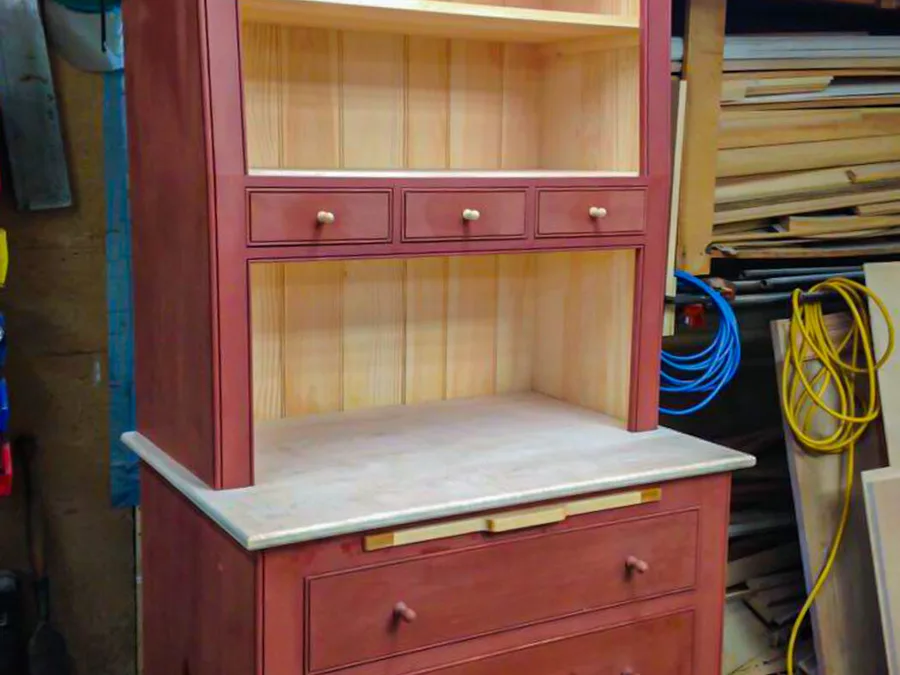

Local business content systems
I turn the content you already have into a month of ready-to-post material.
Send me your photos, videos, website, and past jobs. You get back post ideas, reel scripts, captions, and a simple posting calendar — one flat fee, delivered as a PDF in 3–5 business days.
Starter Pack — $500 · one-time · PDF in 3–5 business days
Built for contractors, makers, real estate teams, restaurants, shops, service businesses, and local brands that need to post more without overthinking it.
Posting gets hard when everything is scattered.
Most local businesses already have the raw material: job photos, before-and-after shots, customer stories, process videos, website copy, reviews, and old posts.
The problem is not usually a lack of content. The problem is that nobody has time to turn that material into a clear posting plan.
Photos are buried in phones and folders.
Videos never become reels.
Good work never becomes a post.
Posting only happens when someone remembers.
I turn your existing material into a repeatable content system.
Instead of starting from scratch every week, we build a simple system: what to film, what to post, how to caption it, and how to keep the business visible without making social media a second full-time job.
- Website + photos + videos + past jobs
- Content ideas + reel scripts + captions
- Posting calendar + reusable templates
- Consistent local business content
What you send me, and what you get back.
You do not need a perfect content library. Send what you have and I'll help sort it out.
What you send me
- Your website link
- Facebook / Instagram / LinkedIn links
- Photos of finished work
- Short phone videos
- Before-and-after photos
- Customer reviews
- Old posts that worked
- Notes on what you want more customers to understand
What you get back
- 5 social post ideas
- 3 reel concepts
- Caption starters
- A simple posting calendar
- Branded visual direction
- A "what to film next" shot list
- Profile / page cleanup notes
- Optional sample post or reel mockup
Starter Pack
A small, focused package for businesses that need a content plan they can actually use.
- Quick review of your website and social pages
- 5 social post ideas
- 3 short reel concepts / scripts
- 1 simple posting calendar
- 1 branded visual direction
- 1 "what to film next" shot list
- Caption starters and hashtag suggestions
- Profile / page cleanup notes
- Optional sample post or reel mockup if enough material is available
- Format
- One PDF you can post from
- Turnaround
- 3–5 business days
- Price
- $500, one time
- After delivery
- Post it yourself, or add monthly help
This is planning, not a giant agency contract: a practical PDF that tells you what to post, what to film, and how to caption it — roughly ten hours of figuring-it-out done for you. Want me to edit your clips too? Video editing is a separate add-on, so the $500 stays focused on the plan.
Need more than the starter pack?
Quick Audit
$250
A lighter review of your website, social pages, and content opportunities. Good if you want direction before committing to a full content pack.
- Website / social review
- Content gaps
- 10 post ideas
- Simple next-step checklist
Starter Pack
$500
The main offer: content ideas, reel concepts, captions, posting calendar, and a shot list.
- 5 post ideas + 3 reel concepts
- Captions & hashtags
- Posting calendar
- "What to film next" shot list
- Branded visual direction
Monthly Content System
from $1,500/mo
Ongoing content planning and production support for businesses that want consistent posts without starting over every month.
- Monthly content calendar
- 8–12 posts / reels per month
- Captions
- Content intake form
- Shot list
- Simple performance review
- Reusable templates
Built for businesses with real work to show.
- Woodworkers
- Contractors
- Landscapers
- Real estate agents
- Cleaners
- Barbers
- Tattoo shops
- Restaurants
- Local makers
- Home service businesses
- Small shops
- Podcast hosts
- Photographers
This works best when your business already has work worth showing, but no clear system for turning it into posts.
First demo: Britten Woodworking
Britten Woodworking is a Connecticut shop with 30+ years of 18th-century, colonial cabinetry, paneling, and restoration — real craft (no veneers, no shortcuts) that's hard to explain quickly online. Here's the content system built from the work it already has.
Decades of finished pieces, process photos, and shop footage — scattered, and rarely posted.
Five content pillars, reel scripts, captions, a shot list, and a four-week posting plan.
A month of posts the shop can film on a phone between jobs — no agency, no second full-time job.
It makes the craftsmanship easy to understand, easy to share, and easy for a customer to trust.
The real work this is built from




Woodworking Content Starter Pack
- 5 content pillars
- 10 reel concepts
- 10 post ideas
- 4-week posting calendar
- "What to film next" shot list
- Caption bank
- Facebook-first posting plan
See the complete sample system — all five pillars, ten reels, ten posts, the four-week calendar, shot list, and caption bank.
How the process works
- 01
Send your material
Your website, social pages, photos, videos, and past work.
- 02
I review what you have
I go through it and find what's already worth posting.
- 03
I build the system
Post ideas, reel scripts, captions, and a posting plan.
- 04
You get something usable
A simple system you can start posting from right away.
- 05
We can make it monthly
If it works, we turn it into an ongoing content workflow.
Why I can build this
My background sits between design, video, web systems, and business strategy. I produce podcasts, edit short-form video, build dashboards, create motion graphics, and use AI-assisted workflows to turn messy material into organized content systems.
The goal is simple: make it easier for good local businesses to show the work they are already doing.
- Podcast production
- Short-form video
- Motion graphics
- Captions
- Websites
- Dashboards
- Remotion
- AI-assisted workflows
- BA Graphic Design
- MS IT / Web Design
- MBA
What this is not
- Not a promise to go viral
- Not a giant agency contract
- Not a social media course
- Not a generic AI content dump
- Not a replacement for doing good work
It is a practical starter system for turning real work into usable posts.
Want me to look at your business?
Send me your website, social pages, and a few examples of your work. I'll tell you whether the starter pack makes sense.